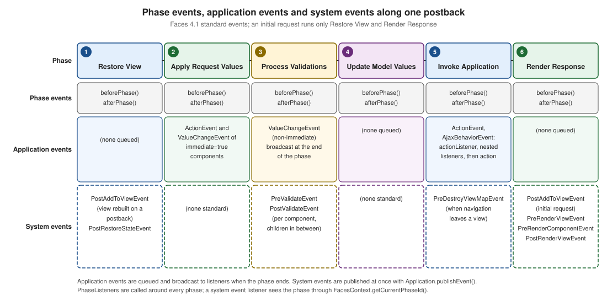

Events and Listeners
|
This content was generated with the assistance of AI and should be verified against the official documentation before being relied on in production. The reference material consulted while preparing these pages is listed in the section bibliography. |
This page is written against Jakarta Faces 4.1 (API jakarta.faces-api 4.1.2, part of Jakarta EE 11), Eclipse Mojarra
4.1.17 and Apache MyFaces Core 4.1.4, with Java 17 or later. Every example was compiled and deployed in a scratch
Bookshelf WAR on Tomcat 11.0.26 with Weld 6.0.4.Final, once with Mojarra and once with MyFaces, and the traces shown
are what the listeners printed for form posts made with curl (checked on 2026-10-08). Where the two implementations
differ, the text says so and the differences are collected in Mojarra and MyFaces. Faces 4.0 was not run separately;
the version differences in What Changed come from the Since tags of the 4.1 API documentation and the specification.
Faces is a component framework, and like every component framework it reports what happens through events. Something happens (a button is activated, a value changes, a component is added to the view, a phase starts) and code that registered an interest is called. The specification defines three families of events with different mechanics, and most confusion about "which listener runs when" comes from mixing them up:
The Three Event Families
| Family | Events | Delivery | Typical use |
|---|---|---|---|
Application events (specification section 3.4.2) |
|
Queued while a phase runs, then broadcast when the phase ends. The event knows its |
Reacting to what the user did: a click, a changed input |
System events (section 3.4.3) |
|
Published immediately by |
Reacting to what the framework is doing: a component joined the view, a view is about to render, the application started |
Phase events (section 12.3) |
|
Delivered by the lifecycle itself, around each of the six phases |
Cross-cutting concerns: timing, logging, a gate in front of a whole view |
The figure places the standard events along one postback. An initial (GET) request runs only Restore View and Render Response, so only the first and the last column are visited.

The rest of the page takes the families in turn: application events first (the ones every page uses), then system
events, then phase events, and ends with a table for choosing between them. The core tags that register listeners
(f:event, f:actionListener, f:setPropertyActionListener, f:phaseListener) are introduced in
Core Tags (f:); this page goes into the semantics behind them. The lifecycle phases
themselves are described in The Request Processing Lifecycle.
Application Events
An application event is created by a component, queued on the component (queueEvent()), and delivered by the
lifecycle management method of the UIViewRoot at the end of the phase: processDecodes(), processValidators(),
processUpdates() or processApplication(). Listeners are broadcast in the order the events were queued, and a
listener may queue further events that are delivered later in the same phase. The specification lists what a listener
may do while it runs: examine or modify the component tree, add messages, queue more events, throw
AbortProcessingException, and call renderResponse() or responseComplete().
action versus actionListener
A command component (h:commandButton, h:commandLink, f:ajax on either) emits an ActionEvent when the user
activates it. Two attributes look similar and do different jobs:
action |
actionListener |
|
|---|---|---|
Purpose |
Run the application logic and decide where to go next |
React to the event: audit, copy a value, prepare data |
Expression |
Method expression with the signature |
Method expression with |
Return value |
The outcome: |
None. A listener cannot influence navigation |
Receives the event |
No |
Yes: |
How many |
Exactly one per component |
One attribute, plus any number of nested |
Runs |
After every listener of the component |
Before the |
The next view declares a single input with five ways of submitting it. The page stays on the same view
(action returns null) so every trace can be read from one response:
<h:form id="f">
<h:inputText id="note" value="#{actionsBean.note}" required="true"/>
<h:message id="m" for="note"/>
<h:commandButton id="plain" value="Plain"
actionListener="#{actionsBean.audit}"
action="#{actionsBean.submit}"/>
<h:commandButton id="nested" value="Nested"
actionListener="#{actionsBean.audit}"
action="#{actionsBean.submit}">
<f:actionListener binding="#{auditListener}"/>
</h:commandButton>
<h:commandButton id="cancel" value="Cancel" immediate="true"
actionListener="#{actionsBean.audit}"
action="#{actionsBean.cancel}"/>
<h:commandButton id="noarg" value="No argument"
actionListener="#{actionsBean.noArg}"
action="#{actionsBean.submit}"/>
</h:form>@Named
@RequestScoped
public class ActionsBean {
private String note;
// actionListener: void, receives the event, cannot navigate
public void audit(ActionEvent event) {
FacesContext context = FacesContext.getCurrentInstance();
TraceBean.add("actionListener on " + event.getComponent().getId()
+ " in " + context.getCurrentPhaseId().getName() + ", note=" + note);
}
public void noArg() {
TraceBean.add("no-arg actionListener");
}
// action: returns the outcome (null = stay on this view)
public String submit() {
TraceBean.add("action submit, note=" + note);
return null;
}
public String cancel() {
TraceBean.add("cancel action, note=" + note);
return null;
}
public String getNote() { return note; }
public void setNote(String note) { this.note = note; }
}binding)@Named("auditListener")
@RequestScoped
public class AuditListener implements ActionListener {
@Override
public void processAction(ActionEvent event) throws AbortProcessingException {
TraceBean.add("AuditListener on " + event.getComponent().getId());
}
}Posting the nested button with note=x produced, identically on Mojarra and MyFaces:
setNote(x)
actionListener on nested in INVOKE_APPLICATION, note=x
AuditListener on nested
action submit, note=xThe order is the one to remember: Update Model Values runs first (setNote), then in Invoke Application the
actionListener attribute, the nested listeners in tag order, and finally the action. Two consequences follow.
-
The listener already sees the updated model (
note=x), and so does the action. -
The
actionis the last thing to run for the command. Logic that must decide the outcome belongs there, and logic that only observes belongs in a listener. The listener method is declaredvoid, so it has no way to return an outcome.
Posting noarg printed no-arg actionListener and then the action, so the no-argument form works, exactly as the VDL
describes. Prefer the form with ActionEvent when the same method serves several buttons.
The application of the action method itself is also done by a listener. After all listeners registered on the
component have run, the application-wide ActionListener receives the event; the default implementation evaluates
the action expression and passes the outcome to the NavigationHandler (see the navigation page; specification section 7.1.1, property
actionListener). That listener is a decorator point, shown in The application-wide ActionListener.
immediate on a command
With immediate="true" the ActionEvent is queued for Apply Request Values instead of Invoke Application. The
cancel button above has that attribute, and with the empty required note field posted it printed:
actionListener on cancel in APPLY_REQUEST_VALUES, note=null
cancel action, note=nullBoth the listener and the action ran in phase 2, before conversion, validation and the model update of the other fields,
so note is still null (the field was never validated and never written). The required error that the plain
button produces for the same post is skipped. That is the point of an immediate Cancel button: leave the form without
being blocked by its validation. It is also the pitfall: an immediate command sees no submitted data of the
non-immediate inputs. Use it for "go away" actions and not for "save a draft". The lifecycle page shows both routes in
its section on immediate.
AbortProcessingException and other exceptions
A listener (or the action) can fail in two different ways, and Faces treats them differently.
AbortProcessingException is the polite way to say "stop processing this event". Throwing it from the actionListener
attribute method or from a nested listener ends the event: the listeners after it do not run and the action is
not called. The page is then rendered normally, with HTTP 200 (on both implementations). Posting the button whose
first listener throws it
(actionListener="#{actionsBean.abortListener}", below) printed only:
setNote(x)
abortListenerand the response showed last= (the action never set it). The same happened when the exception came from a nested
f:actionListener: its sibling listeners were skipped and the action was not called. The exception adds no message
by itself (the h:message of the form stayed empty), so add a FacesMessage before throwing if the user should know.
public void abortListener(ActionEvent event) {
FacesContext context = FacesContext.getCurrentInstance();
context.addMessage(null, new FacesMessage(FacesMessage.SEVERITY_WARN,
"The borrow request was not sent", null));
throw new AbortProcessingException("stop");
}Any other RuntimeException (the scratch run threw an IllegalStateException) is not caught by the event broadcast.
It travels to the ExceptionHandler, which queues an ExceptionQueuedEvent and, in the default setup, ends in the
error page; with PROJECT_STAGE=Development both implementations answered HTTP 500, and Mojarra’s trace showed the
ExceptionQueuedEvent published in Invoke Application.
The exception handling page explains which exceptions the handler never sees (this one among them) and what happens with no configuration; handling them centrally is the subject of the rest of that page.
f:actionListener: listeners as classes
A listener can also be a class. f:actionListener registers one on the closest command component, with type (a class
name that Faces instantiates) or binding (an expression that yields the instance). The core tags page describes the
attributes, and the scratch runs there showed the important difference: a class created from type is not injected
by CDI, while binding="#{auditListener}" resolves a real bean, so @Inject works in it. The nested AuditListener
above is such a bean. Prefer binding for anything that needs a service, and type only for stateless helpers.
The specification makes the listeners of a component part of its saved state, so a listener class needs a public
zero-argument constructor and may implement StateHolder when it holds state.
See the action listeners section of the core tags page for the tag reference.
The application-wide ActionListener
Every ActionEvent ends up in one more listener: the one set on the Application. Replacing it is the extension point
for something that must see every command in the application, such as auditing or a CSRF-style token check. The
API provides ActionListenerWrapper (since 2.2) for the decorator pattern:
public class AuditedActionListener extends ActionListenerWrapper {
private final ActionListener wrapped;
// Faces calls this constructor with the listener it is decorating
public AuditedActionListener(ActionListener wrapped) {
this.wrapped = wrapped;
}
@Override
public ActionListener getWrapped() {
return wrapped;
}
@Override
public void processAction(ActionEvent event) throws AbortProcessingException {
TraceBean.add("application ActionListener sees " + event.getComponent().getClientId());
getWrapped().processAction(event); // evaluates the action and navigates
}
}<faces-config xmlns="https://jakarta.ee/xml/ns/jakartaee"
xmlns:xsi="http://www.w3.org/2001/XMLSchema-instance"
xsi:schemaLocation="https://jakarta.ee/xml/ns/jakartaee https://jakarta.ee/xml/ns/jakartaee/web-facesconfig_4_1.xsd"
version="4.1">
<application>
<action-listener>org.example.bookshelf.web.AuditedActionListener</action-listener>
</application>
</faces-config>The trace of the nested button became:
actionListener on nested in INVOKE_APPLICATION, note=x
AuditListener on nested
application ActionListener sees f:nested
action submit, note=xso the application listener runs after the component’s own listeners and just before the action method, and
forgetting to call the wrapped listener would silently disable every action and every navigation in the
application. It is called once per command, and not at all when an earlier listener threw
AbortProcessingException.
f:setPropertyActionListener
f:setPropertyActionListener is an action listener that does one thing: when the command is activated it copies the
value expression into the target expression. It exists to pass the row of a table to the action, and it is
covered with the other core tags. What the tag reference does not stress is when it runs and what it may target:
-
It runs in Invoke Application, like every action listener, in the order of the tags and after the
actionListenerattribute. The target is therefore written after conversion and validation, never before; a validator cannot see it. -
The
valueis evaluated when the command fires, so insideui:repeatorh:dataTableit is the value of the clicked row. -
The value is coerced to the type of the target. A literal
42reached aLongproperty as42. -
The target is any writable expression: a bean property,
#{requestScope.name},#{flash.name}.
<h:form id="f">
<ui:repeat id="rows" value="#{selectionBean.books}" var="book">
<h:commandButton id="open" value="Open #{book.title}" action="#{selectionBean.show}">
<f:setPropertyActionListener target="#{selectionBean.selected}" value="#{book}"/>
<f:setPropertyActionListener target="#{selectionBean.year}" value="#{book.year}"/>
<f:setPropertyActionListener target="#{selectionBean.count}" value="42"/>
<f:setPropertyActionListener target="#{requestScope.picked}" value="#{book}"/>
<f:setPropertyActionListener target="#{flash.picked}" value="#{book.isbn}"/>
</h:commandButton>
</ui:repeat>
</h:form>@Named
@RequestScoped
public class SelectionBean {
@Inject
private BookService books;
private Book selected;
private int year;
private Long count;
public List<Book> getBooks() { return books.findAll(); }
public String show() {
ExternalContext external = FacesContext.getCurrentInstance().getExternalContext();
Book picked = (Book) external.getRequestMap().get("picked");
TraceBean.add("show selected=" + selected.title() + " year=" + year + " count=" + count
+ " requestScope.picked=" + picked.title() + " flash.picked=" + external.getFlash().get("picked"));
return null;
}
public Book getSelected() { return selected; }
public void setSelected(Book selected) { this.selected = selected; }
public int getYear() { return year; }
public void setYear(int year) { this.year = year; }
public Long getCount() { return count; }
public void setCount(Long count) { this.count = count; }
}Posting the second button gave, on both implementations:
show selected=The Hobbit year=1937 count=42 requestScope.picked=The Hobbit flash.picked=9780547928227All five targets were set before show() ran, and the setters ran in the Invoke Application phase (the trace of
setSelected printed INVOKE_APPLICATION). In new code prefer the EL method call, which is typed and needs no
tag: action="#{selectionBean.open(book)}". f:setPropertyActionListener remains useful when the same
click must fill several properties, or to put a value in the flash for the next view. The data tables page compares the
row-selection techniques (see row actions).
Value-Change Events
A UIInput (and its subclasses UISelectOne, UISelectMany, UISelectBoolean) emits a ValueChangeEvent when a
new local value has been converted and has passed all validation and the value differs from the previous one. The
event carries getOldValue() and getNewValue(). It is delivered by the same machinery as ActionEvent: the listener
can be a method (valueChangeListener attribute), a class registered with f:valueChangeListener (type, binding,
or for inside a composite component), or added in Java with addValueChangeListener().
The next view is the genre filter of the Bookshelf catalogue, with a text field and a number field next to it so the examples show what does and does not fire:
<h:form id="f">
<h:selectOneMenu id="genre" value="#{genreFilterBean.genre}"
valueChangeListener="#{genreFilterBean.genreChanged}">
<f:selectItem itemValue="" itemLabel="Any"/>
<f:selectItem itemValue="fantasy" itemLabel="Fantasy"/>
<f:selectItem itemValue="scifi" itemLabel="Science fiction"/>
<f:valueChangeListener type="org.example.bookshelf.web.GenreListener"/>
</h:selectOneMenu>
<h:inputText id="title" value="#{genreFilterBean.title}"
valueChangeListener="#{genreFilterBean.titleChanged}"/>
<h:inputText id="perPage" value="#{genreFilterBean.perPage}"
valueChangeListener="#{genreFilterBean.perPageChanged}"/>
<h:commandButton id="save" value="Save" action="#{genreFilterBean.save}"/>
</h:form>@Named
@RequestScoped
public class GenreFilterBean {
private String genre;
private String title;
private int perPage = 10;
public void genreChanged(ValueChangeEvent event) {
FacesContext context = FacesContext.getCurrentInstance();
TraceBean.add("valueChangeListener on " + event.getComponent().getId()
+ " old=" + event.getOldValue() + " new=" + event.getNewValue()
+ " model=" + genre + " phase=" + context.getCurrentPhaseId().getName());
}
public void titleChanged(ValueChangeEvent event) {
TraceBean.add("titleChanged old='" + event.getOldValue() + "' new='" + event.getNewValue() + "'");
}
public void perPageChanged(ValueChangeEvent event) {
TraceBean.add("perPageChanged old=" + event.getOldValue() + " new=" + event.getNewValue());
}
public String save() {
TraceBean.add("save genre=" + genre + " title=" + title + " perPage=" + perPage);
return null;
}
// getters and setters; setGenre and setTitle log "setGenre(...)" and "setTitle(...)"
}public class GenreListener implements ValueChangeListener {
@Override
public void processValueChange(ValueChangeEvent event) throws AbortProcessingException {
TraceBean.add("GenreListener old=" + event.getOldValue() + " new=" + event.getNewValue());
}
}Posting genre=fantasy, an empty title and perPage=10 (the current value) printed:
valueChangeListener on genre old=null new=fantasy model=null phase=PROCESS_VALIDATIONS
GenreListener old=null new=fantasy
titleChanged old='null' new=''
setGenre(fantasy)
setTitle()
save genre=fantasy title= perPage=10Reading the trace gives the rules.
-
When: the event is broadcast at the end of Process Validations, and both the attribute listener and the nested
f:valueChangeListenerran, in that order (the attribute first), before any setter. In the listenermodel=null: the bean has not been updated yet.getNewValue()is the value to use; reading the bean property inside a value-change listener returns the old value. -
Only on change:
perPagedid not fire because10equals the old value. A field that still has its old value never produces an event. -
The blank-string trap:
titleChangedfired withold='null' new=''although the user typed nothing. The component’s old value is the value read from the bean (null) and a blank field submits an empty string, which Faces treats as a new value. Set the context parameterjakarta.faces.INTERPRET_EMPTY_STRING_SUBMITTED_VALUES_AS_NULLtotrueto have blank submissions converted tonull: with it, the same post produced notitleChangedat all (checked on both implementations, which then calledsetTitle(null)). -
The old value is the bean’s value: the previous value is read through the value expression, so a request-scoped bean (like this one) starts every request with
nulland a non-blank value fires on every submit. A view-scoped bean behaves as expected: on Mojarra, postinga,a,band an empty string to a field bound to a@ViewScopedbean firedold=null new=a, nothing,old=a new=bandold=b new=''. Keep the state behind an input in a bean that outlives the request when you rely on this event. -
Failed validation elsewhere does not cancel it: with
perPage=abc(a conversion error) thegenreandtitleevents were still delivered, because those components validated fine, and then the lifecycle jumped to Render Response without updating any of the model.
The no-argument form is allowed here too (valueChangeListener="#{bean.method}" with a void method taking no
parameters), as the VDL for h:inputText states; the scratch run printed no-arg valueChangeListener.
Source: Jakarta EE Tutorial: Registering a Value-Change Listener on a Component and Jakarta Faces 4.1 API: ValueChangeEvent
The old "dependent drop-down" idiom and why it is gone
In the JSF 1.x books the standard way to refresh a second drop-down when the first one changes was a valueChangeListener
combined with immediate="true" and onchange="this.form.submit()". The listener called renderResponse() to skip
validation of the rest of the form:
public void genreChangedImmediate(ValueChangeEvent event) {
FacesContext context = FacesContext.getCurrentInstance();
TraceBean.add("immediate valueChangeListener old=" + event.getOldValue()
+ " new=" + event.getNewValue() + " phase=" + context.getCurrentPhaseId().getName());
context.renderResponse();
}On an h:selectOneMenu with immediate="true" the post printed
immediate valueChangeListener old=null new=scifi phase=APPLY_REQUEST_VALUES, and nothing else: no setter ran, not even
the one of the drop-down itself, because renderResponse() skipped Process Validations and Update Model Values. The
view is redisplayed with the submitted value held in the component, but the bean knows nothing about it, and every
other field was ignored. It works only by accident, and it forces a full page post.
Since Faces 2.0 the right tool is Ajax. f:ajax inside the input runs the usual lifecycle for just the components listed
in execute, calls an AjaxBehaviorListener method after the model has been updated, and re-renders only render:
<h:selectOneMenu id="aj" value="#{genreFilterBean.ajaxGenre}">
<f:selectItem itemValue="" itemLabel="Any"/>
<f:selectItem itemValue="fantasy" itemLabel="Fantasy"/>
<f:ajax listener="#{genreFilterBean.ajaxChanged}" render="out"/>
</h:selectOneMenu>
<h:panelGroup id="out" layout="block">genre=#{genreFilterBean.ajaxGenre}</h:panelGroup>public void ajaxChanged(AjaxBehaviorEvent event) {
TraceBean.add("ajax listener " + event.getBehavior().getClass().getSimpleName()
+ " on " + event.getComponent().getId() + " model=" + ajaxGenre
+ " phase=" + FacesContext.getCurrentInstance().getCurrentPhaseId().getName());
}The Ajax post (header Faces-Request: partial/ajax, event valueChange) printed setAjaxGenre(fantasy) and then
ajax listener AjaxBehavior on aj model=fantasy phase=INVOKE_APPLICATION: unlike the ValueChangeEvent, the Ajax
listener runs in Invoke Application and sees the updated model, which is what dependent drop-downs need. The render
target must be a Faces component with an id (MyFaces answered a plain p element with
"Cannot find component for expression" while the page was rendered, Mojarra did not complain); the
Ajax page covers execute, render, events and the JavaScript API. Use valueChangeListener when you need the old
value or must react in Process Validations, and f:ajax listener for everything that is "the input changed, update
something".
System Events
System events were added in Faces 2.0. They describe moments of the framework’s own life, not of the user’s activity,
and they use a simple publish and subscribe model: no queue, no phase, no PhaseId. The framework calls
Application.publishEvent() at the right point, and every listener subscribed to exactly that event class (and
accepting the source) is called at once. Subclasses do not count: a listener subscribed to a superclass is not called
for a subclass event, and the implementation must not support subclass relationships.
A listener implements jakarta.faces.event.SystemEventListener:
public interface SystemEventListener extends FacesListener {
boolean isListenerForSource(Object source);
void processEvent(SystemEvent event) throws AbortProcessingException;
}isListenerForSource() is called first and lets one listener ignore sources it does not care about; returning false
means processEvent() is not called. When the listener is attached to a single component the method is not needed,
and the sibling interface ComponentSystemEventListener (only processEvent(ComponentSystemEvent)) is used. A
SystemEvent has a getSource() of type Object; the ComponentSystemEvent subclasses add getComponent().
There are five ways to declare an interest, according to the specification: Application.subscribeToEvent()
(application scope), UIComponent.subscribeToEvent() (component scope), the f:event tag, the @ListenerFor and
@ListenersFor annotations, and the system-event-listener element of an application configuration resource.
Source: Jakarta Faces 4.1 specification, 2.5.10 System Events and Jakarta Faces 4.1 API: SystemEventListener
The Standard Events
| Event | Source | Published | Since |
|---|---|---|---|
|
|
After all configuration resources were parsed and processed; the place for start-up code that must not depend on a
|
2.0 |
|
|
Before the factories of the application are released |
2.0 |
|
a component |
After an individual component’s state was restored (also published, on Mojarra, for the |
2.0 |
|
a component |
After the component (or an ancestor) was added to the view, on the initial build, when the VDL adds components because
an EL expression changed, or when code calls |
2.0 |
|
a component |
Before a component is removed from the view |
2.0 |
|
a component |
Before the component and its children are validated; parents publish it before their children |
2.0 |
|
a component |
After the component and its children were validated; parents publish it after their children |
2.0 |
|
|
Before the view is rendered, on every request that renders it |
2.0 |
|
a component |
Before a component is rendered |
2.0 |
|
|
After the view was rendered |
2.3 |
|
|
The first time |
2.0 |
|
|
When the view map is cleared |
2.0 |
|
the flash key (a |
When a value is stored in, kept in or removed from the flash, and before the flash is cleared |
2.2 |
|
|
When code queues an exception for the |
2.0 |
Source: Jakarta Faces 4.1 specification, 3.4.3.1 Event Classes and Jakarta Faces 4.1 API: package jakarta.faces.event
Two details of the table come from the API documentation and not from the specification prose. The flash events are
called PostPutFlashValueEvent, PostKeepFlashValueEvent and PreRemoveFlashValueEvent in the API; the
specification text names them PostPutFlashEvent, PostKeepFlashEvent and PreRemoveFlashEvent. Use the API names. The
flash page shows these events in a run.
The API also holds PostConstructCustomScopeEvent and PreDestroyCustomScopeEvent, deprecated for removal since 4.1
because custom scopes have been replaced by CDI.
What Fires, and in Which Order
The easiest way to see the events is to subscribe one listener to all of them and print what arrives. This listener ignores the anonymous components that Facelets generates and prints the event, the type of the source and the current phase:
public class EventTracer implements SystemEventListener {
@Override
public boolean isListenerForSource(Object source) {
return true;
}
@Override
public void processEvent(SystemEvent event) throws AbortProcessingException {
FacesContext context = FacesContext.getCurrentInstance();
Object source = event.getSource();
String id = "";
if (source instanceof UIViewRoot root) {
id = " viewId=" + root.getViewId();
} else if (source instanceof UIComponent component) {
if (component.getId() != null && component.getId().startsWith("j_id")) {
return;
}
id = " id=" + component.getId();
}
String phase = context == null || context.getCurrentPhaseId() == null
? "-" : context.getCurrentPhaseId().getName();
TraceBean.add("sys " + event.getClass().getSimpleName() + " source="
+ source.getClass().getSimpleName() + id + " phase=" + phase);
}
}It is registered once per event class in faces-config.xml (there is no wildcard, and one element per class, which is
a reason to prefer Application.subscribeToEvent() when you want many; see Application-Wide Listeners):
<application>
<system-event-listener>
<system-event-listener-class>org.example.bookshelf.web.EventTracer</system-event-listener-class>
<system-event-class>jakarta.faces.event.PreRenderViewEvent</system-event-class>
</system-event-listener>
<system-event-listener>
<system-event-listener-class>org.example.bookshelf.web.EventTracer</system-event-listener-class>
<system-event-class>jakarta.faces.event.PostValidateEvent</system-event-class>
</system-event-listener>
<!-- ... one element per event class ... -->
</application>Source: Jakarta Faces 4.1 specification, 3.4.3.6 Listener Registration By Application Configuration Resources and web-facesconfig_4_1.xsd
The test view is a form with an input, a "Go" command and a "Leave" command that navigates away, bound to a
@ViewScoped bean. An initial request (GET) on Mojarra printed:
sys PostRestoreStateEvent source=UIViewRoot viewId=/shelf.xhtml phase=RESTORE_VIEW
sys PostAddToViewEvent source=HtmlForm id=f phase=RENDER_RESPONSE
sys PostAddToViewEvent source=HtmlInputText id=q phase=RENDER_RESPONSE
sys PostAddToViewEvent source=HtmlCommandButton id=go phase=RENDER_RESPONSE
sys PostAddToViewEvent source=HtmlCommandButton id=leave phase=RENDER_RESPONSE
sys PostAddToViewEvent source=UIViewRoot viewId=/shelf.xhtml phase=RENDER_RESPONSE
sys PreRenderViewEvent source=UIViewRoot viewId=/shelf.xhtml phase=RENDER_RESPONSE
sys PreRenderComponentEvent source=UIViewRoot viewId=/shelf.xhtml phase=RENDER_RESPONSE
sys PreRenderComponentEvent source=HtmlForm id=f phase=RENDER_RESPONSE
sys PreRenderComponentEvent source=HtmlInputText id=q phase=RENDER_RESPONSE
ShelfViewBean created
sys PostConstructViewMapEvent source=UIViewRoot viewId=/shelf.xhtml phase=RENDER_RESPONSE
sys PreRenderComponentEvent source=HtmlCommandButton id=go phase=RENDER_RESPONSE
sys PreRenderComponentEvent source=HtmlCommandButton id=leave phase=RENDER_RESPONSE
sys PostRenderViewEvent source=UIViewRoot viewId=/shelf.xhtml phase=RENDER_RESPONSE(the trace also contains a PreRenderComponentEvent for the doctype component of the page, left out here). The view
is built in Render Response, so PostAddToViewEvent is published then; and the view scope is created lazily, in the
middle of rendering, when the first EL expression touches the @ViewScoped bean. A postback with a valid value
printed, on both implementations:
sys PostAddToViewEvent source=HtmlForm id=f phase=RESTORE_VIEW
sys PostAddToViewEvent source=HtmlInputText id=q phase=RESTORE_VIEW
sys PostAddToViewEvent source=HtmlCommandButton id=go phase=RESTORE_VIEW
sys PostAddToViewEvent source=HtmlCommandButton id=leave phase=RESTORE_VIEW
sys PostAddToViewEvent source=UIViewRoot viewId=/shelf.xhtml phase=RESTORE_VIEW
sys PostRestoreStateEvent source=UIViewRoot viewId=/shelf.xhtml phase=RESTORE_VIEW
sys PreValidateEvent source=UIViewRoot viewId=/shelf.xhtml phase=PROCESS_VALIDATIONS
sys PreValidateEvent source=HtmlForm id=f phase=PROCESS_VALIDATIONS
sys PreValidateEvent source=HtmlInputText id=q phase=PROCESS_VALIDATIONS
sys PostValidateEvent source=HtmlInputText id=q phase=PROCESS_VALIDATIONS
sys PreValidateEvent source=HtmlCommandButton id=go phase=PROCESS_VALIDATIONS
sys PostValidateEvent source=HtmlCommandButton id=go phase=PROCESS_VALIDATIONS
...
sys PostValidateEvent source=HtmlForm id=f phase=PROCESS_VALIDATIONS
sys PostValidateEvent source=UIViewRoot viewId=/shelf.xhtml phase=PROCESS_VALIDATIONS
go q=dune
sys PreRenderViewEvent source=UIViewRoot viewId=/shelf.xhtml phase=RENDER_RESPONSE
sys PreRenderComponentEvent ... (one per rendered component)
sys PostRenderViewEvent source=UIViewRoot viewId=/shelf.xhtml phase=RENDER_RESPONSEThe findings worth keeping:
-
PostAddToViewEventis published on postbacks too, during Restore View. The view is rebuilt from the template on every request and each component is added again. ThePostAddToViewEventJavadoc says the event is not published whenisPostback()is true during Restore View, but both implementations published it in the runs above. Do not write apostAddToViewlistener that must run only once per component; it runs once per request. -
PreValidateEventandPostValidateEventwrap children. Parents publish the pre-event before and the post-event after their children, so the order is root, form, input; input post; …; form post; root post. ApostValidatelistener on a container sees all its children already validated, which is why it is the hook for cross-field validation (see the validators page). -
A validation failure skips the rest: with an empty value for a required input the same post produced the
PreValidateEvent/PostValidateEventpairs and went straight toPreRenderViewEvent; no action ran. -
PreRenderViewEventfires on every request that renders the view, postbacks and Ajax requests included. In an Ajax request thePreRenderComponentEventis published only for the components that are re-rendered (render=), butPreRenderViewEventandPostRenderViewEventstill fire for the view. -
Leaving the view: the "Leave" command printed
ShelfViewBean destroyedandPreDestroyViewMapEvent source=UIViewRoot phase=INVOKE_APPLICATION(Mojarra destroys the bean first, MyFaces publishes the event first). The response was a redirect, so nothing was rendered. -
Initial requests on MyFaces publish
PostAddToViewEventfor theUIViewRootin Restore View and for the other components in Render Response, and do not publishPostRestoreStateEventfor it; Mojarra publishesPostRestoreStateEventand everything else in Render Response.
The same picture, with the initial request limited to its two phases, is the figure at the top of the page.
f:event: Declarative Listeners
f:event attaches a ComponentSystemEventListener method to the closest parent component. It takes type (a short
name such as postAddToView, preValidate, postValidate, preRenderView, preRenderComponent, or a fully
qualified class name of a ComponentSystemEvent) and listener (a method expression that takes a
ComponentSystemEvent, or no arguments). The core tags page lists the types and shows postValidate and preRenderView
examples; this section adds the two uses that page does not show. The tag only works for component system events, not
for application events like PostConstructApplicationEvent, whose source is not a component.
The f:event section of the core tags page has the tag reference.
Adding components when a component joins the view
postAddToView on a container is the classic place to build children in Java, because the container is already
attached to the tree (getParent() and getClientId() work). Here a panel is filled with one h:outputText per book:
<h:panelGroup id="shelf" layout="block">
<f:event type="postAddToView" listener="#{dynamicBean.fill}"/>
</h:panelGroup>@Named
@RequestScoped
public class DynamicBean {
@Inject
private BookService books;
public void fill(ComponentSystemEvent event) {
UIComponent panel = event.getComponent();
if (panel.getChildCount() > 0) {
return; // already built (state restored)
}
for (Book book : books.findAll()) {
HtmlOutputText text = new HtmlOutputText();
text.setId("row" + book.isbn()); // stable ids
text.setValue(book.title() + "; ");
panel.getChildren().add(text);
}
}
}The listener ran on the initial request and again on every postback and Ajax request, each time finding the panel with
no children (children=0 in the trace on both implementations), and the response contained the three span elements
with ids row9780441013593, row9780547928227 and row9780261102385. The two safeguards in the code matter: always
give programmatic components stable ids, and guard against adding children twice with the child count. For most
dynamic needs a Facelets tag (ui:repeat, c:forEach) is simpler; see
Programmatic Facelets.
preRenderView is not "on first load"
preRenderView is often used to load data after the view parameters were applied. It does that, but it fires for the
view on every rendering request. The trace of a listener printing isPostback() and the Ajax flag, on the initial
request and then on a full postback and an Ajax postback of the same view, was (Mojarra):
preRenderView load isbn=9780441013593 postback=false ajax=false
preRenderView load isbn=9780441013593 postback=true ajax=false
preRenderView load isbn=9780441013593 postback=true ajax=trueGuard with FacesContext.isPostback() when the work must not repeat, or use f:viewAction, which runs once on the initial
request by default, can navigate, and is covered with view parameters and view actions. The Ajax case also showed a difference worth
knowing: on MyFaces the same listener saw isbn=null on the Ajax postback while Mojarra still had the value (the
parameter came from the request URL of the Ajax post). Do not rely on request parameters in a preRenderView listener
of an Ajax request; keep the value in a view-scoped bean.
@ListenerFor: Components and Renderers That Listen to Themselves
A component or a renderer can subscribe itself to system events by implementing the listener interface and carrying
@ListenerFor. The annotation is processed whenever the component is created with Application.createComponent():
for a UIComponent that implements ComponentSystemEventListener the listener is the component itself (subscribed on
that instance); for a Renderer that implements ComponentSystemEventListener it is subscribed on the component the
renderer draws. The attribute systemEventClass names the event, and sourceClass (optional) filters the source when
the listener targets the application. The annotation is repeatable, with @ListenersFor as the container, and, like all
system event subscriptions, matches the event class exactly.
The API documentation of the annotation uses the standard stylesheet renderer as its example: it carries
@ListenerFor(systemEventClass=PostAddToViewEvent.class), so it is a listener for every component that names it as
its renderer. The next component is a small custom one, a note line for the Bookshelf catalogue that records when it
joined the view and when it is about to render:
@FacesComponent(value = "bookshelf.shelfNote", createTag = true, tagName = "shelfNote",
namespace = "urn:org.example.bookshelf")
@ListenerFor(systemEventClass = PostAddToViewEvent.class)
@ListenerFor(systemEventClass = PreRenderComponentEvent.class)
public class ShelfNote extends UIOutput implements ComponentSystemEventListener {
@Override
public void processEvent(ComponentSystemEvent event) throws AbortProcessingException {
if (event instanceof PostAddToViewEvent) {
getAttributes().put("added", Boolean.TRUE);
TraceBean.add("ShelfNote added to view, parent=" + getParent().getClass().getSimpleName());
} else if (event instanceof PreRenderComponentEvent) {
TraceBean.add("ShelfNote about to render, added=" + getAttributes().get("added"));
}
}
@Override
public void encodeBegin(FacesContext context) throws IOException {
super.encodeBegin(context); // publishes PreRenderComponentEvent
ResponseWriter writer = context.getResponseWriter();
writer.startElement("span", this);
writer.writeAttribute("id", getClientId(context), "id");
}
@Override
public void encodeEnd(FacesContext context) throws IOException {
ResponseWriter writer = context.getResponseWriter();
Object value = getValue();
writer.writeText(value == null ? "" : value.toString(), this, "value");
writer.endElement("span");
}
}<html xmlns="http://www.w3.org/1999/xhtml"
xmlns:h="jakarta.faces.html"
xmlns:bs="urn:org.example.bookshelf">
...
<bs:shelfNote id="note" value="hello"/>On both implementations the trace was ShelfNote added to view, parent=HtmlBody followed, at render time, by
ShelfNote about to render, added=true, and the page contained <span id="note">hello</span>. The line that is easy
to miss is super.encodeBegin(context): PreRenderComponentEvent is published inside UIComponentBase.encodeBegin(),
and the first version of this component, which overrode encodeBegin() without calling super, never received it
(the PostAddToViewEvent listener still worked). When writing a custom component, call the superclass method or move the
markup to a Renderer; the custom components page covers the full component API and where each method runs.
Source: Jakarta Faces 4.1 API: ListenerFor and specification 3.4.3.5 Listener Registration By Annotation
The specification text adds validators and converters to the places where @ListenerFor may be used, but the API
documentation of @ListenerFor (which is normative for what the default implementation must support) names only
UIComponent and Renderer. Treat those two as the supported targets.
Application-Wide Listeners
A SystemEventListener that is not tied to a component subscribes on the Application, either in XML with
system-event-listener (shown in What Fires, and in Which Order) or in Java with subscribeToEvent(). The optional source-class
element of the XML (or the second argument of the two-argument subscribeToEvent) restricts the listener to events whose source is
exactly that class. The classic place to subscribe in Java is a listener for PostConstructApplicationEvent, which runs
once at start-up, after the configuration was processed:
public class StartupListener implements SystemEventListener {
@Override
public boolean isListenerForSource(Object source) {
return source instanceof Application;
}
@Override
public void processEvent(SystemEvent event) throws AbortProcessingException {
Application application = ((PostConstructApplicationEvent) event).getApplication();
application.subscribeToEvent(PreRenderViewEvent.class, UIViewRoot.class, new SystemEventListener() {
@Override
public boolean isListenerForSource(Object source) {
return ((UIViewRoot) source).getViewId().startsWith("/admin");
}
@Override
public void processEvent(SystemEvent e) {
TraceBean.add("admin view rendering: " + ((UIViewRoot) e.getSource()).getViewId());
}
});
}
}<application>
<system-event-listener>
<system-event-listener-class>org.example.bookshelf.web.StartupListener</system-event-listener-class>
<system-event-class>jakarta.faces.event.PostConstructApplicationEvent</system-event-class>
<source-class>jakarta.faces.application.Application</source-class>
</system-event-listener>
</application>Requests for /admin/index.xhtml printed admin view rendering: /admin/index.xhtml and requests for other views did
not, on Mojarra. The isListenerForSource() filter is evaluated before processEvent() is called, which makes it cheap to
filter on the source’s view id.
Source: Jakarta Faces 4.1 specification, 7.1.14 System Event Methods and Jakarta Faces 4.1 API: PostConstructApplicationEvent
Two things went wrong in the scratch runs and are worth avoiding.
Unsubscribing needs the same instance. unsubscribeFromEvent() removes the listener instance that was passed in, and
the listeners have no equals(). This request-scoped bean subscribes and then tries to clean up with a new object:
public String borrow() {
FacesContext context = FacesContext.getCurrentInstance();
Application application = context.getApplication();
application.subscribeToEvent(BorrowedEvent.class, new BorrowedListener());
application.publishEvent(context, BorrowedEvent.class, books.findAll().get(0));
application.unsubscribeFromEvent(BorrowedEvent.class, new BorrowedListener()); // a different instance
return null;
}The first request printed borrowed: Dune once, the second printed it twice: the listeners accumulated for the life
of the application (checked on both implementations). Subscribe once, at start-up, and keep the instance if you must
unsubscribe it.
CDI injection into listeners differs. A listener class listed in faces-config.xml is instantiated by Faces. On
MyFaces 4.1.4 an @Inject field of the EventTracer and of the phase listener below was filled in; on Mojarra 4.1.17 it
stayed null in both cases. The portable way to reach CDI from such a listener is CDI.current().select(...) (it
returned the bean on Mojarra, and CDI.current().getBeanManager().getEvent().fire(...) fires CDI events), or a bridge
as in the next section.
Bridging a System Event to a CDI Observer
Faces does not fire CDI events for its system events (the exception is WebsocketEvent, a CDI event with the
@Opened and @Closed qualifiers, since 2.3, for f:websocket, see the push page; the other CDI events Faces fires are the @Initialized, @BeforeDestroyed and @Destroyed events of the view and flow scopes, see the scopes page). If your services use @Observes, a small bridge listener
converts the system event into a CDI event. The listener is registered with a source-class of UIViewRoot for
PreRenderViewEvent and ignores the admin area; the observer is an application-scoped bean that counts renders:
public class CdiBridgeListener implements SystemEventListener {
@Override
public boolean isListenerForSource(Object source) {
return source instanceof UIViewRoot root && !root.getViewId().startsWith("/admin");
}
@Override
public void processEvent(SystemEvent event) throws AbortProcessingException {
UIViewRoot root = (UIViewRoot) event.getSource();
CDI.current().getBeanManager().getEvent().fire(new ViewRendering(root.getViewId()));
}
}public record ViewRendering(String viewId) {
}
@ApplicationScoped
public class ViewStats {
private final Map<String, LongAdder> renders = new ConcurrentHashMap<>();
void onRender(@Observes ViewRendering event) {
renders.computeIfAbsent(event.viewId(), k -> new LongAdder()).increment();
}
public Map<String, LongAdder> getRenders() {
return renders;
}
}<system-event-listener>
<system-event-listener-class>org.example.bookshelf.web.CdiBridgeListener</system-event-listener-class>
<system-event-class>jakarta.faces.event.PreRenderViewEvent</system-event-class>
<source-class>jakarta.faces.component.UIViewRoot</source-class>
</system-event-listener>Rendering /events.xhtml once printed ViewStats observed /events.xhtml total=1, a postback made it total=2, and
the admin views did not appear in the counters. The bridge is a good pattern for audit counters and metrics because it
keeps the Faces dependency in one 10-line class.
Your Own System Events
An event class that extends SystemEvent (or ComponentSystemEvent for a component event, shown on the core tags page
with @NamedEvent) can be published with Application.publishEvent(context, EventClass.class, source). The runtime
instantiates the class by reflection and passes the source to its constructor, so the event needs a public constructor
with one parameter that accepts the source. A domain event for the borrow flow of Bookshelf:
public class BorrowedEvent extends SystemEvent {
public BorrowedEvent(Book book) {
super(book);
}
public Book getBook() {
return (Book) getSource();
}
}
public class BorrowedListener implements SystemEventListener {
@Override
public boolean isListenerForSource(Object source) {
return source instanceof Book;
}
@Override
public void processEvent(SystemEvent event) {
TraceBean.add("borrowed: " + ((BorrowedEvent) event).getBook().title());
}
}Publishing it printed borrowed: Dune on both implementations. For application logic that is not tied to the Faces
runtime a CDI event is the better fit, as the bridge section showed; system events are best kept for things that
concern the view and the component tree.
Phase Events
A PhaseListener is called before and after each lifecycle phase. The lifecycle page already describes the interface,
the rules the specification sets (registration order for beforePhase, reverse order for afterPhase, the
guarantee that afterPhase follows a beforePhase, thread safety) and the three registration routes, with a logging
listener; read its PhaseListener section first. This section
adds what the scratch runs showed about combining phase listeners with the other event families.
| Route | Scope | Notes |
|---|---|---|
|
Every request of the application |
Instantiated by Faces. |
|
Only requests for that view (a listener on its |
Never saw Restore View in the scratch runs (not even |
|
Only that view; one method pair for all phases |
The |
|
Every request |
Programmatic, for libraries |
A listener registered in faces-config.xml with the following code, which times phases using the context’s attribute
map instead of fields, printed this for an initial request (the timings are from Mojarra, MyFaces printed the same
lines):
public class TimingPhaseListener implements PhaseListener {
private static final String START = TimingPhaseListener.class.getName() + ".start";
@Override
public PhaseId getPhaseId() {
return PhaseId.ANY_PHASE;
}
@Override
public void beforePhase(PhaseEvent event) {
FacesContext context = event.getFacesContext();
context.getAttributes().put(START + event.getPhaseId().getOrdinal(), System.nanoTime());
TraceBean.add("before " + event.getPhaseId().getName() + " viewRoot="
+ (context.getViewRoot() == null ? "null" : context.getViewRoot().getViewId()));
}
@Override
public void afterPhase(PhaseEvent event) {
FacesContext context = event.getFacesContext();
long start = (Long) context.getAttributes().get(START + event.getPhaseId().getOrdinal());
TraceBean.add("after " + event.getPhaseId().getName() + " took "
+ (System.nanoTime() - start) / 1000 + " us renderResponse=" + context.getRenderResponse()
+ " responseComplete=" + context.getResponseComplete());
}
}before RESTORE_VIEW viewRoot=null
after RESTORE_VIEW took 23186 us renderResponse=true responseComplete=false
before RENDER_RESPONSE viewRoot=/phases.xhtml
after RENDER_RESPONSE took 36889 us renderResponse=true responseComplete=falseOn the initial request Restore View ends with renderResponse=true, which is how the lifecycle jumps straight to
Render Response. The listener cannot call getViewRoot() in beforePhase(RESTORE_VIEW): it is null there, because the
view is created or restored by that phase. In the POST of a valid form the same listener showed
renderResponse=false after every phase up to Update Model Values and renderResponse=true after Invoke Application,
because the default ActionListener always calls renderResponse() (the lifecycle page explains that).
The two registration scopes interleave in a fixed way. With a faces-config listener and a view-level listener
(f:view beforePhase/afterPhase and an f:phaseListener) the order for Process Validations was:
before PROCESS_VALIDATIONS (faces-config listener)
f:view beforePhase PROCESS_VALIDATIONS
ViewPhaseListener before PROCESS_VALIDATIONS
... validation and the ValueChangeEvents of the phase ...
f:view afterPhase PROCESS_VALIDATIONS
ViewPhaseListener after PROCESS_VALIDATIONS
after PROCESS_VALIDATIONS (faces-config listener)The application-wide listener is the outermost one on both implementations. The f:phaseListener of the view was
called only for the phase it declared in getPhaseId(), and its f:view counterpart for all phases but, as the table
says, not beforePhase of Restore View (the traces printed f:view afterPhase RESTORE_VIEW and no beforePhase; an f:phaseListener with
ANY_PHASE printed nothing for Restore View, neither before nor after).
According to the UIViewRoot Javadoc, a view-level beforePhase that calls renderResponse() or responseComplete()
makes the phase’s own processing be skipped, the same power described in the lifecycle page.
A phase listener is a good place for an entry gate that must run before the view’s own logic. This one redirects
requests for /admin/* away when the user lacks a role, in the first moment the view id is known, which is after Restore View:
public class AdminGuardListener implements PhaseListener {
@Override
public PhaseId getPhaseId() {
return PhaseId.RESTORE_VIEW;
}
@Override
public void afterPhase(PhaseEvent event) {
FacesContext context = event.getFacesContext();
ExternalContext external = context.getExternalContext();
String viewId = context.getViewRoot().getViewId();
if (viewId.startsWith("/admin") && !external.isUserInRole("admin")) {
try {
external.redirect(external.getRequestContextPath() + "/shelf.xhtml");
} catch (IOException e) {
throw new IllegalStateException(e);
}
context.responseComplete();
}
}
}A request for /admin/index.xhtml without the role answered 302 to /shelf.xhtml on both implementations, and the
trace ended with after RESTORE_VIEW and no later phase, which shows responseComplete() stopped the lifecycle. This is
only a gate for the example. Real authorisation belongs in the container’s security constraints or Jakarta Security
(see the security page), which also protect the resources a Faces view does not reach.
Choosing the Right Hook
Several mechanisms overlap. The table maps a need to the narrowest one that works:
| I need to | Use | Why |
|---|---|---|
run logic when a button is clicked and navigate |
|
It is the one place that returns an outcome |
observe a click without influencing navigation, or share a method between buttons |
|
It receives the component; runs before |
pass a table row to the action |
EL method call |
Typed; |
react to a changed field and refresh something |
|
Runs in Invoke Application, after the model update; no |
need the old value, or must act in Process Validations |
|
Delivered in phase 3 with |
load data for a view once |
|
Initial request only by default; can navigate |
run something on every render of a view |
|
Fires for postbacks and Ajax requests as well |
validate several fields together |
|
Children are validated already |
build components in Java |
|
The parent is attached to the tree |
react in a custom component or renderer |
|
The component subscribes itself |
act once at start-up or on shutdown |
|
Independent of |
measure, log or gate every phase |
|
It is called around each phase |
decorate every action in the application |
|
It sees each command once |
actionListener observes"] Q -->|"the user changed an input"| B{"Need the old value
or phase 3?"} B -->|"yes"| C["valueChangeListener"] B -->|"no"| D["f:ajax listener"] Q -->|"the framework did something"| E{"One component or
the whole application?"} E -->|"one component"| F["f:event or @ListenerFor"] E -->|"whole application"| G["SystemEventListener in
faces-config.xml"] Q -->|"a lifecycle phase boundary"| H["PhaseListener"]
What Changed
| Version | Change |
|---|---|
1.x |
|
2.0 |
System events: |
2.2 |
|
2.3 |
|
3.0 |
The package is |
4.0 |
The |
4.1 |
|
5.0 (upcoming) |
Not covered: the milestone documentation was not reviewed for this page |
Mojarra and MyFaces
Both implementations produced the same observable behaviour for application events, AbortProcessingException,
f:setPropertyActionListener, the order of listeners, the application-wide ActionListener, @ListenerFor, the blank
string trap and the PhaseListener ordering. The differences found while preparing the page:
| Behaviour | Mojarra | MyFaces |
|---|---|---|
|
Not injected ( |
Injected |
|
Published |
Not published |
|
Phase Render Response |
Phase Restore View |
Order of destroying a view-scoped bean and |
Bean |
Event first |
|
Rendered the view without complaint (a GET request) |
Error page: "Cannot find component for expression" |
Request parameter of an |
Value still present |
|
|
|
|
On MyFaces a scripted form post must also send the hidden <formId>_SUBMIT field that its renderer adds to every form,
otherwise it treats the request as an initial one; this affects tests written with curl, not browsers.
Where the Books Are Outdated
The event model is the part of the older books that has aged best, because the application events and PhaseListener
are still the ones described in 2004 to 2010. The differences are mostly in what surrounds them:
-
No system events. The books on JSF 1.x (Mann, Dudney et al., Jacobi and Fallows) describe
ActionEvent,ValueChangeEventand phase events and nothing between them; reacting to "the component was added" or "the view will render" needed aPhaseListenerand a walk of the tree. Burns and Schalk, who cover JSF 2.0, are the exception and are the right book for the system event design (f:event,@ListenerFor). Everything in System Events postdates the 1.x books. -
Value-change and immediate tricks. The "auto-submit and
immediateandrenderResponse()`" idiom for dependent drop-downs, common in the JSF 1.x and early 2.0 books, is replaced by `f:ajax(The old "dependent drop-down" idiom and why it is gone). -
MethodBindingcode. JSF 1.x examples that build aMethodBindingfor the action or the listener of a command use API that was removed in Faces 4.0; use method expressions, as on this page. -
Beans. Listener beans in the books are
@ManagedBeanclasses; here they are CDI beans (see the removed@ManagedBean) reached withbinding="#{...}". A listener class that Faces instantiates itself (thetypeattribute, thefaces-config.xmlregistrations) is not injected on Mojarra. -
Package names.
javax.faces.eventin every book isjakarta.faces.eventsince 3.0.
The books that map to this page are Burns and Schalk (the event model, including action, value-change, phase and system
events), Dudney and others (navigation, actions and listeners, and the Observer pattern behind the event model) and Mann
(components and renderers, where the FacesListener mechanics sit).
Common Mistakes
-
Putting navigation logic in an
actionListener. It cannot return an outcome. Put it inaction(outcomes are the subject of the navigation page). -
Reading the model in a
valueChangeListener. The bean has not been updated; usegetNewValue(). -
Expecting
ValueChangeEventonce per real change with a request-scoped bean. It compares with the bean’s value, which isnullat the start of every request; keep input state in a@ViewScopedbean or accept the event on every submit. -
Blank fields that "change". An empty string differs from
null; setjakarta.faces.INTERPRET_EMPTY_STRING_SUBMITTED_VALUES_AS_NULLtotrue. -
immediateplusrenderResponse()as a way to skip validation. The whole model update is skipped too. Usef:ajaxwith a narrowexecute. -
Throwing a plain exception to "cancel" an event. Only
AbortProcessingExceptionis a polite stop; any other exception goes to theExceptionHandlerand usually to an error page. -
Subscribing in a request.
subscribeToEvent()calls in a bean or listener that run per request leak listeners; subscribe once at start-up and keep the instance. -
Assuming
PostAddToViewEventis "once". It runs on each request that rebuilds the view, postbacks included. -
Heavy work in
PreRenderViewEvent,PreRenderComponentEventor a listener ofANY_PHASE. They run on every request and, for the component event, once per component. Cache, or guard withisPostback(). -
Forgetting
super.encodeBegin()in a component that listens toPreRenderComponentEvent. The event is published there. -
Not calling the wrapped listener in an
ActionListenerWrapper. Omit the call and noactionruns anywhere in the application. -
State in a
PhaseListenerorSystemEventListenerfield. One instance serves every request (and every user): keep per-request data in theFacesContextattribute map. -
Relying on
@Injectin a listener named infaces-config.xml. It works on MyFaces and not on Mojarra; look the bean up withCDI.current()or bridge to a CDI observer. -
Using a phase listener as the only access control. Combine it with container or Jakarta Security rules.
References
-
Jakarta EE Tutorial: Referencing a Method That Handles an Action Event
-
Jakarta EE Tutorial: Referencing a Method That Handles a Value-Change Event
-
Jakarta Faces 4.1 specification, 3.4 Event and Listener Model
-
Jakarta Faces 4.1 specification, 2.3 Common Event Processing
-
Jakarta Faces 4.1 specification, 7.1.14 System Event Methods
-
Jakarta EE Tutorial: Registering an Action Listener on a Component
-
Jakarta EE Tutorial: Registering a Value-Change Listener on a Component
-
Jakarta Faces 4.1 specification, 3.7.10.3 Listener Registration